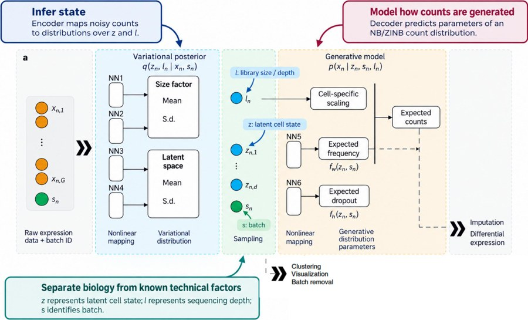
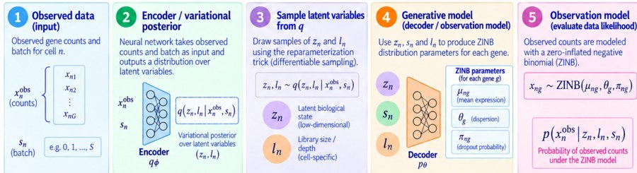
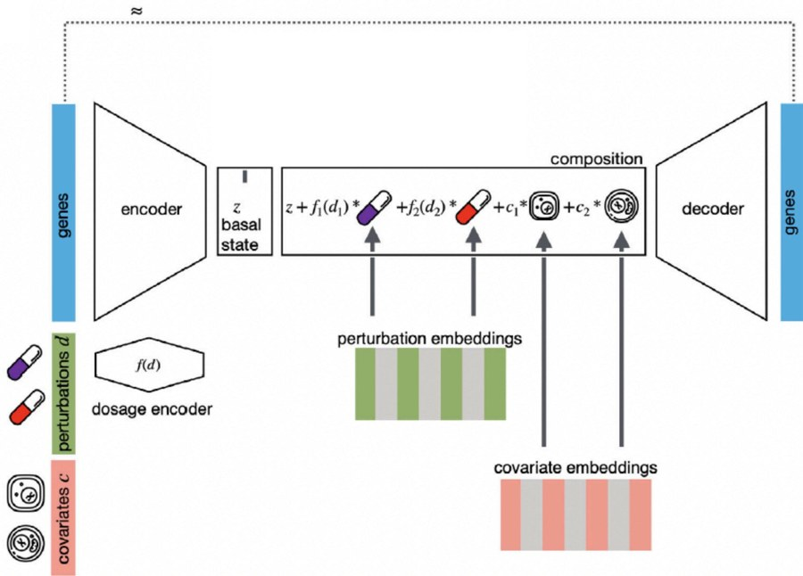
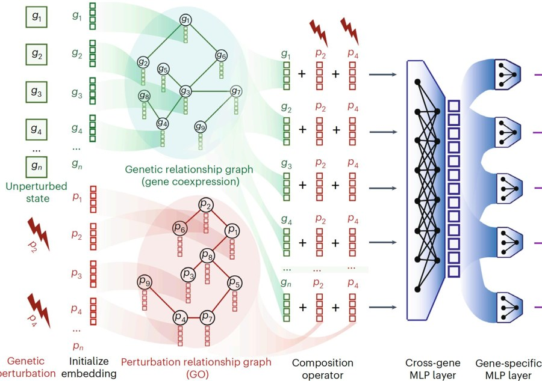
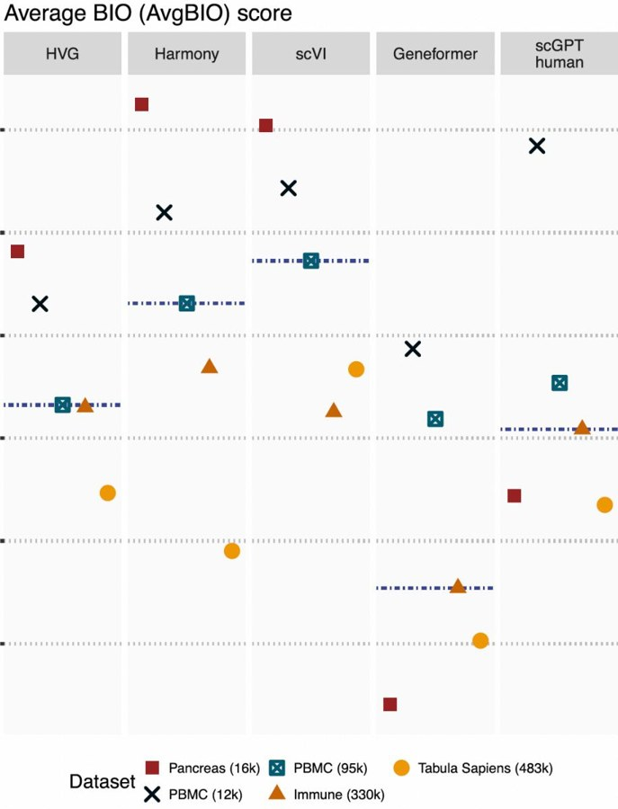

3 · Omics models#
Single-cell data count molecules inside individual cells. This page defines what those numbers are, why they are messy, and how four model families handle them.
1. What scRNA-seq measures#
Explanation. A gene is a stretch of DNA; mRNA (messenger RNA) is the copy a cell makes when the gene is active, and it is what single-cell RNA sequencing counts. scRNA-seq measures, for each cell, how many mRNA molecules of each gene it contains. The result is a count matrix: rows are cells, columns are genes (~20,000), values are counts. A cell type is a group of cells with a similar expression pattern.
Check yourself
A count of 4 for gene TP53 in a cell — what does that number mean, and what does 0 mean?
Answer
4 mRNA molecules of TP53 were captured in that cell. 0 means none were captured — which may mean the gene was off, or that the molecule was missed by the assay (see next section).
2. Why the data are messy#
Explanation. Most entries are zero. Some zeros are biological (gene inactive), some are technical (dropout: the molecule existed but was not captured). Library size is the total counts per cell and varies with sequencing depth, so raw counts are not comparable across cells. A batch effect is a technical difference between groups of cells processed on different days, machines or labs.
Check yourself
Cell A has library size 2,000 and cell B 10,000. Cell A shows 10 counts of a gene, B shows 30. Which cell expresses it more, and why is the raw count misleading?
Answer
Cell A: 10/2,000 = 0.5% of its mRNA; B: 30/10,000 = 0.3%. A expresses it more, but raw counts suggest the opposite because B was sequenced deeper. You must normalise by library size (or model it).
3. scVI: a probabilistic model of cells#
Explanation. scVI is a variational autoencoder (VAE): an encoder compresses each cell's counts into a few numbers \(z\) (the latent representation), and a decoder reconstructs the counts from \(z\). Because it is probabilistic, each cell maps to a distribution, not a point. It uses a zero-inflated negative binomial (ZINB) likelihood: a negative binomial models counts with overdispersion, and a zero-inflation gate models the excess technical zeros. Library size enters as a scaling factor; batch is a covariate given to encoder and decoder.
Term. Amortised inference: one neural network computes the per-cell parameters, instead of optimising them separately for every cell.

Follow the arrows: the encoder sees counts, depth and batch; the latent \(z\) is the biological state; the decoder returns mean, dispersion and dropout probability for every gene.
Check yourself
Map the five problems — excess zeros, varying depth, batch effects, biological noise, scalability — to the scVI components that handle each.
Answer
(1) ZINB dropout gate → excess zeros. (2) Observed library size as an explicit scaling factor in the mean → depth. (3) Batch as a covariate in encoder and decoder → batch effects. (4) A sampled latent variable with a prior plus dispersion → biological noise. (5) Amortised inference with an encoder and mini-batch gradient descent → scalability.
What it optimises. scVI maximises the ELBO (evidence lower bound), which has two terms: a reconstruction term (how likely are the observed counts under the predicted ZINB?) and a KL term (keep the inferred latent variables close to a prior, so the latent space stays smooth and well-behaved). The encoder outputs two latent variables per cell: \(z_n\) (low-dimensional biological state) and \(l_n\) (library size/depth).

Training loops over these five steps. The KL term regularises step 3; the likelihood term scores step 5.
Check yourself
In one sentence each, what do the reconstruction term and the KL term push the model to do?
Answer
Reconstruction pushes the decoder to explain the observed counts well; KL pushes the encoder's distributions toward the prior, regularising the latent space so cells with similar biology land close together instead of memorising noise.
4. A cell is a set, not a sentence#
Explanation. In language, word order carries meaning. In a cell, gene order is arbitrary and the number of expressed genes varies, so positional embeddings are meaningless and the "sequence" length is not fixed. Also, gene identity alone is not enough: you need the expression value.
Check yourself
Why is treating a cell as a sentence of gene names wrong, and what two changes make a Transformer suitable?
Answer
Gene order is arbitrary and the set size varies per cell, so positional information is meaningless; gene identity alone also discards expression magnitude and zeros. Fix: embed gene identity plus its (normalised) expression value, and make the architecture order-invariant by removing positional embeddings (attention over a set).
5. scGPT: a foundation model for cells#
Explanation. A foundation model is pretrained on a very large corpus and reused for many tasks. scGPT is a Transformer trained on millions of cells, mostly by masked gene prediction: hide a gene's value and predict it from the others. It yields general cell embeddings and can be used zero-shot (without fitting on your dataset).
Context matters. A gene's first embedding depends only on its identity and value; after attention it depends on the other genes in that cell.
Check yourself
TP53 has the same expression value in a stressed cancer cell and a resting cell. Are its initial and final embeddings the same?
Answer
Initial: identical (same identity and value). Final: different, because self-attention mixes TP53 with the other genes expressed in each cell, capturing cell state and gene–gene interactions.
Check yourself
Frozen scGPT embeddings versus scVI fitted on your new dataset: which integrates batches better, and when could the answer flip?
Answer
Usually scVI: it is fitted to this dataset, while zero-shot scGPT was not trained on it and tends to retain its batch structure. It flips when batch is confounded with biology (e.g. cancer and normal in different batches): aggressive batch removal deletes the biological signal, so a model that removes less can preserve more biology — at the cost of leaving batch in. Decide by measuring biological conservation, not by assumption.
6. CPA: predicting drug effects#
Explanation. A perturbation is an intervention on cells: a drug, a gene knockout (gene disabled), or a combination. CPA (compositional perturbation autoencoder) splits a cell into a basal state (the cell without treatment) and a perturbation effect, and uses an adversarial discriminator to force the basal state to contain no perturbation information. Each perturbation is represented by a learned embedding. Counterfactual = prediction for a condition not observed.

The basal state should depend only on the cell; the perturbation embedding only on the treatment. The discriminator checks that the split is real.
Check yourself
Can CPA predict a drug never seen in training? What happens if the adversarial weight is set to zero?
Answer
No: a learned embedding for each drug means an unseen drug has no embedding, so it cannot be represented; generalisation needs features that transfer (chemical structure/fingerprint) or mechanism classes. With adversarial weight zero, the basal state is no longer forced to be perturbation-invariant, so it absorbs drug information, the clean decomposition breaks, and counterfactual predictions for unseen combinations become unreliable.
7. GEARS: using biological graphs#
Explanation. GEARS uses two graphs (networks of nodes and edges). \(G_\text{gene}\) links genes that are co-expressed (expressed together). \(G_\text{pert}\) links perturbations with similar downstream effects. Information is passed along the edges so an unseen knockout can borrow strength from similar perturbations.

Two separate message-passing paths: co-expression tells you which genes move together; the perturbation graph tells you which interventions behave alike. Only the second lets an unseen knockout borrow from similar ones.
Check yourself
Why can GEARS predict the effect of a gene that was never knocked out, and why is \(G_\text{gene}\) not enough?
Answer
Its embedding is inferred by propagating over \(G_\text{pert}\) from perturbations with similar effects. \(G_\text{gene}\) describes co-expression, which is a different relationship: using it for perturbation message passing cannot borrow from biologically similar perturbations, so the prediction collapses to an average or arbitrary value.
8. Measuring a good cell embedding#
Explanation. An embedding is good if it scores well on both goals: biological conservation (cell types stay separable: clustering, neighbourhood purity, known structure preserved) and batch integration (batches mix within cell types, and batch is no longer predictable from the embedding). The AvgBIO score summarises biological conservation and the batch score summarises integration. Benchmarks show foundation models capture biology but are not consistently better than HVG, Harmony or scVI zero-shot, and batch effects remain.

Read across the datasets: there is no column where the foundation models dominate. That is the exam point — pretraining does not guarantee a better off-the-shelf embedding.
Check yourself
An embedding has perfect cell-type clustering but every cluster splits by sequencing batch, and a classifier can predict the batch perfectly. Which score is bad, and what is the risk of fixing it aggressively?
Answer
The batch score is bad: batch is still predictable. Fixing it aggressively risks removing biology when batch is confounded with cell type (e.g. cancer and normal processed separately) — evaluate biological conservation before and after integration, not just batch mixing.
9. Evaluating perturbations#
Explanation. MSE (mean squared error) averages over all genes. If only 50 of 10,000 genes respond, predicting "no change" is right almost everywhere. Differentially expressed (DE) genes are those whose expression changes significantly under treatment. The No-Change baseline predicts that expression stays the same — a baseline any real model must beat where it matters.
Check yourself
A model gets MSE 0.05 and No-Change gets 0.06, with 50/10,000 genes changing. Is the model good, and what should you report instead?
Answer
Not necessarily. Predicting no change is already correct for ~99.5% of entries, so global MSE is dominated by unchanged genes and hides whether treatment effects were learned. Report metrics on DE genes only: per-gene standardised error, correlation between predicted and observed effect sizes, delta metrics, and MSE on changed genes separately.
If you remember one thing
Always ask what is held out — a cell, a batch, a perturbation, or a drug never seen. That word decides whether the claim is generalisation or memorisation.